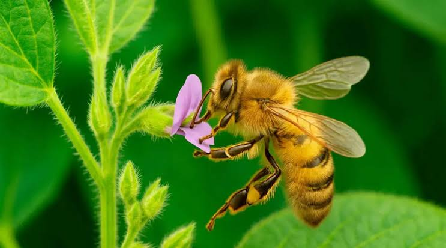
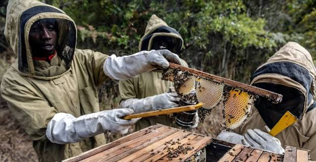

Ciclo de vida
Conoce las etapas de una abeja, desde que es huevo hasta que se convierte en adulta.


Las abejas producen miel como fuente de alimento para la colonia. Descubre su uso y como se produce en la colmena
Conoce las etapas de una abeja, desde que es huevo hasta que se convierte en adulta.

Descubre cómo las abejas polinizan las flores y ayudan a la biodiversidad.